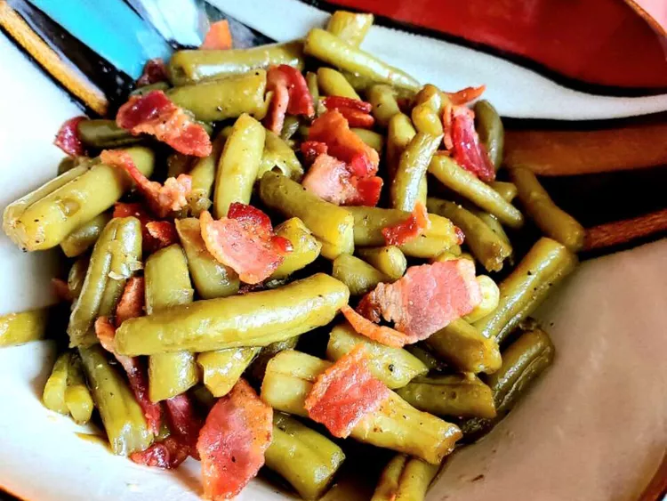

Home
Roasted Green Beans

Ingredients
- 5 slices bacon, diced
- 2 (15 ounce) cans green beans, drained
- 1 tablespoon white sugar
- salt and pepper to taste
Steps
-
Place bacon in a skillet; cook over medium-high heat, turning
occasionally, until evenly browned and crisp. Mix green beans and sugar
into bacon. Cook over medium-high heat until green beans become soft and
limp and start to caramelize.